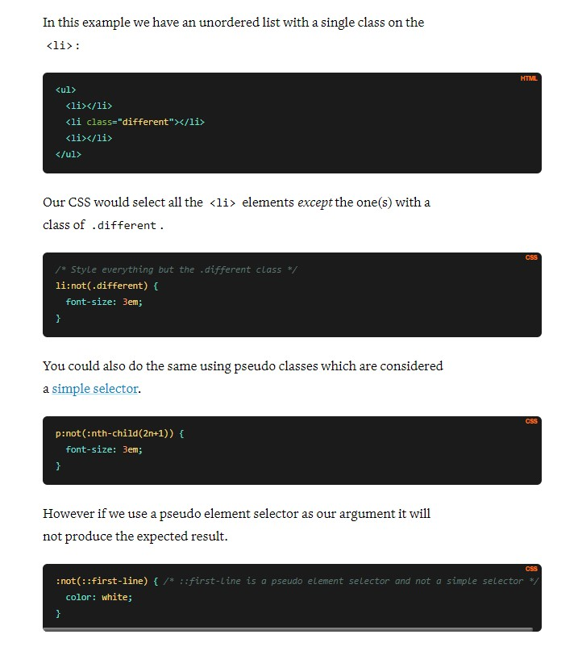

$$ -- The :not() property in CSS is a negation pseudo class and accepts a simple selector or a selector list as an argument. It matches an element that is not represented by the argument. The passed argument may not contain additional selectors or any pseudo-element selectors.
